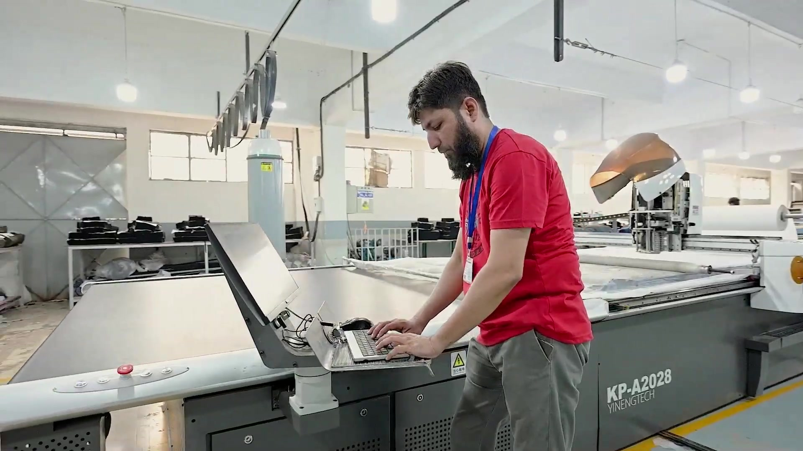
Our Facility
Purpose built and continuously upgraded, bringing every department into one organised flow — from raw material to finished, packed garment. Click any photo to open it full screen and zoom in.
Every Garment Passes a Managed Sequence
Each stage is handled by skilled people and checked at the source, so problems are prevented rather than discovered.
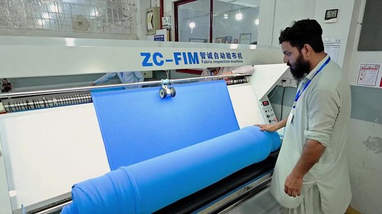
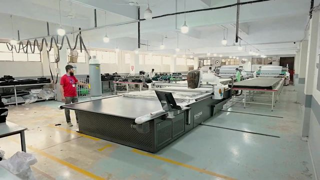
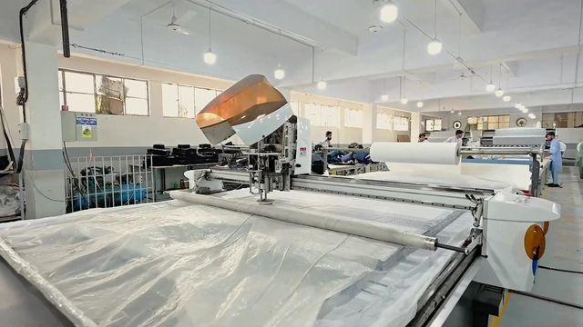
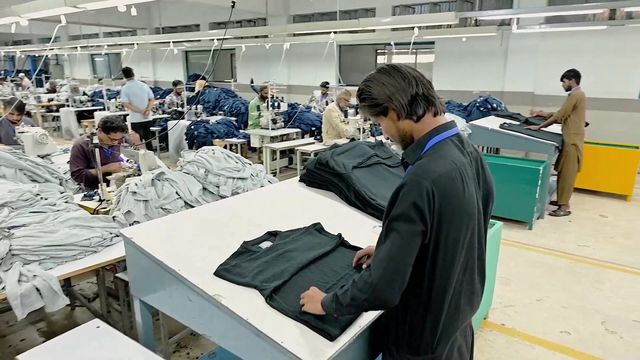
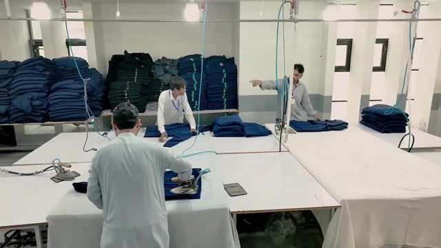
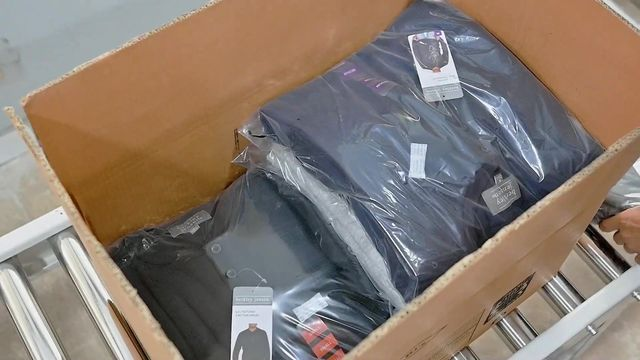
Machinery That Holds the Standard
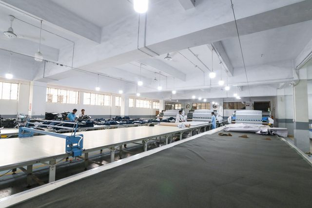
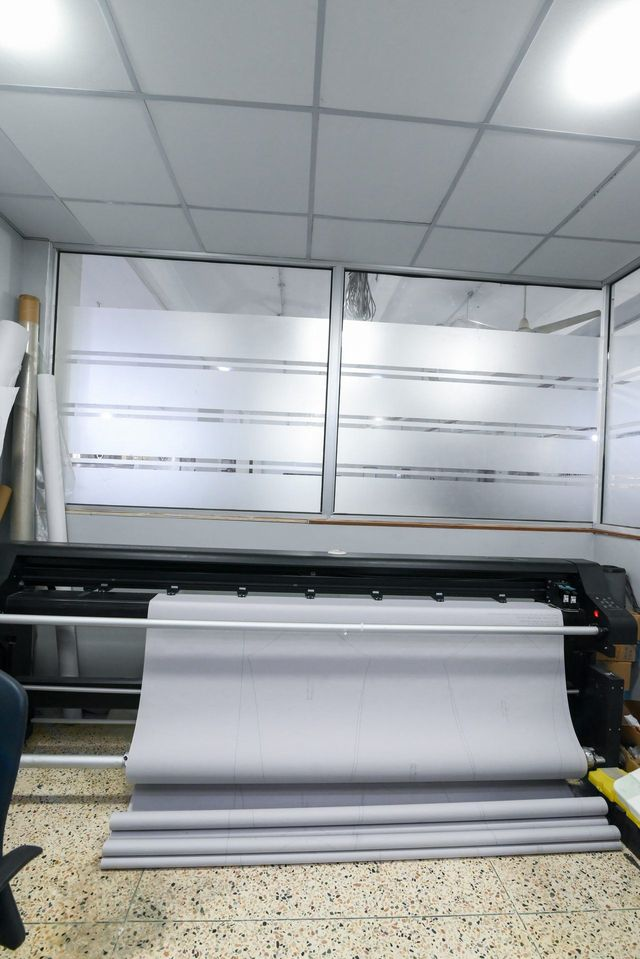
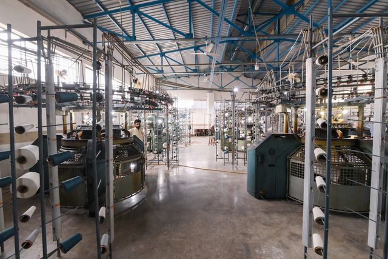
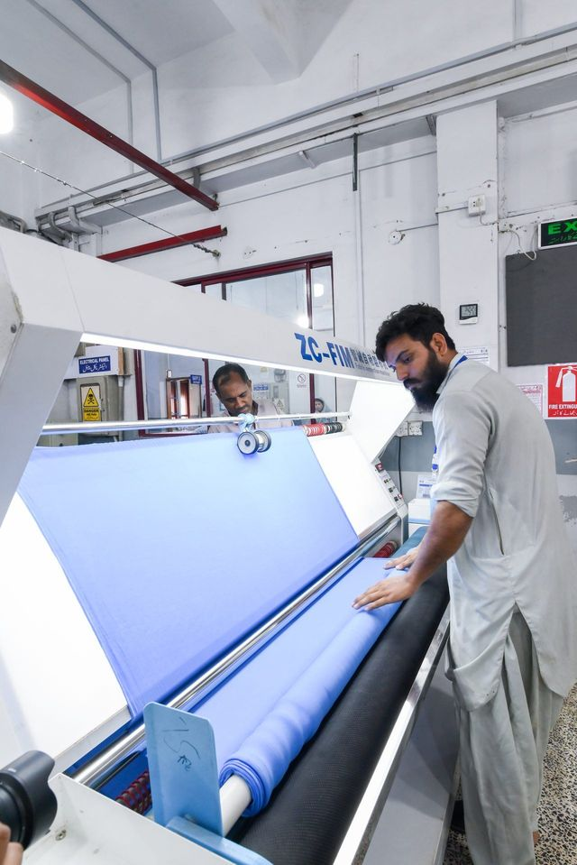
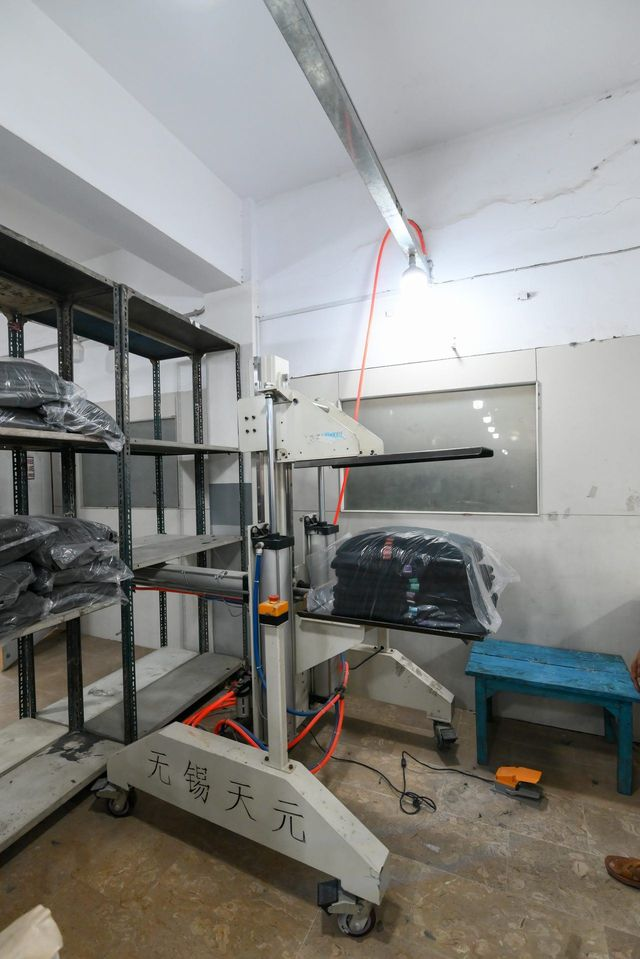
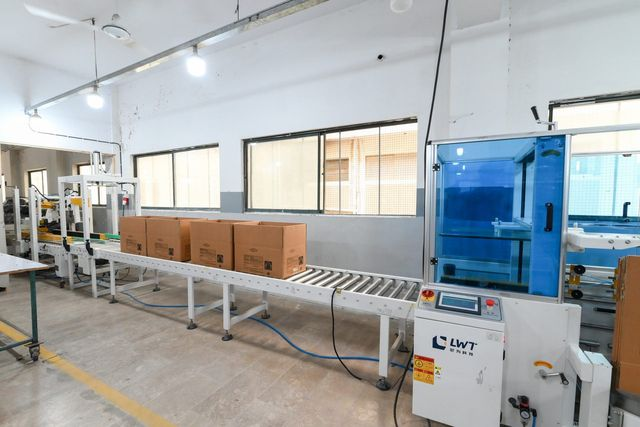
Secured Warehouse, Supervised Dispatch
Finished goods are held in a secured, bonded warehouse and loaded under supervision. Every carton is accounted for, and loading is recorded, supporting C-TPAT and GSV supply chain security.
Security is part of how we protect our customers. The whole facility, from gate to dispatch, is covered by CCTV, with trained staff watching live feeds around the clock, gated entry, visitor management and restricted areas.

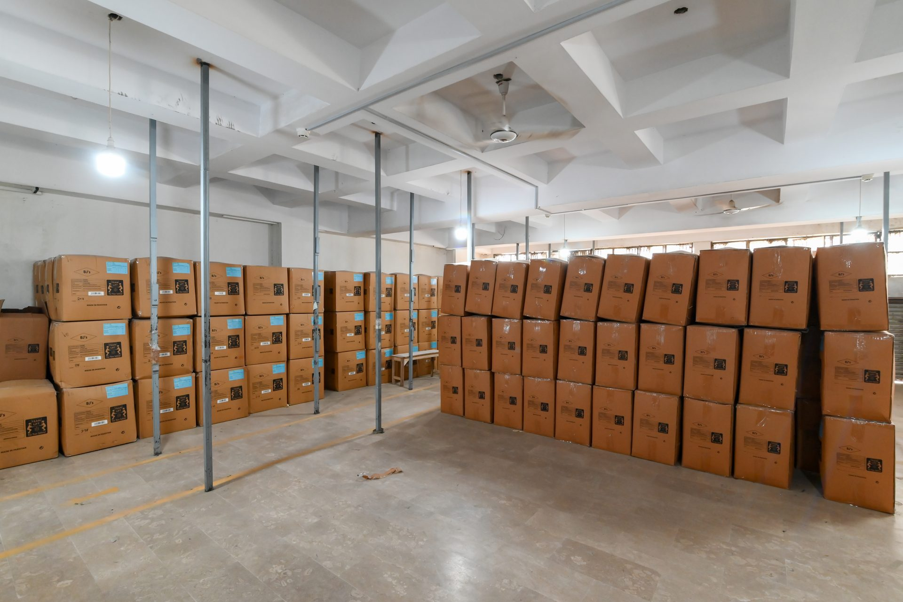
Where Your Order Is Actually Made
Open any frame and zoom right in — the detail holds up, because the work does.
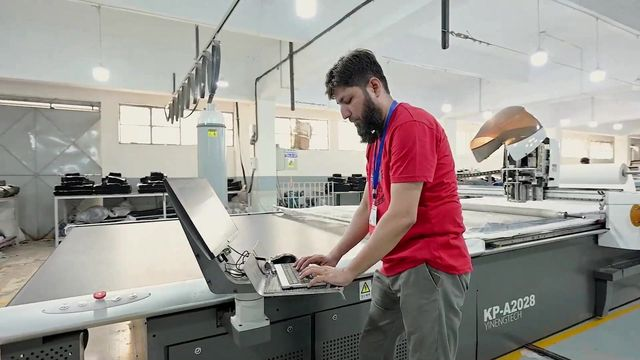
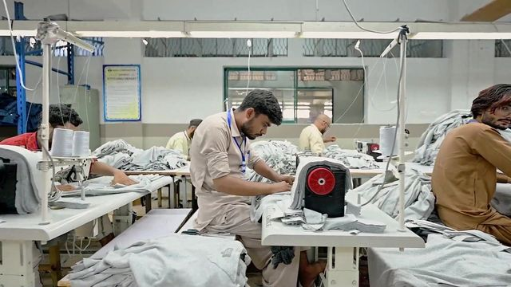
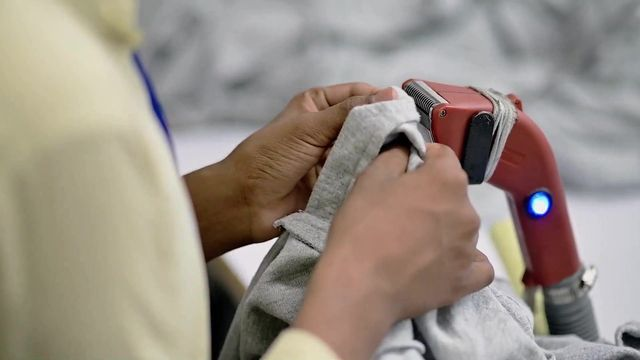
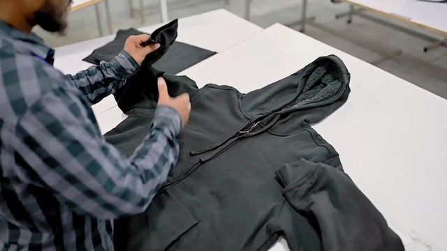
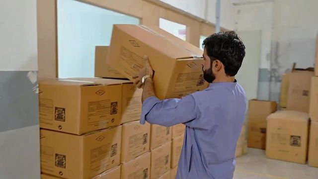
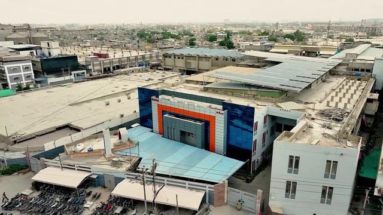